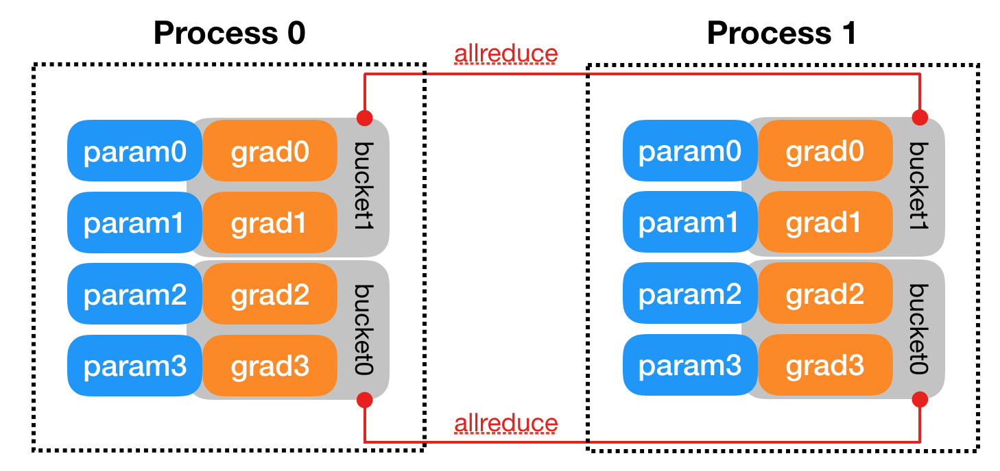

CODE 01: 从零构建 PyTorch DDP#
随着 AI 模型规模的不断增长和数据集的持续扩大，单卡训练已经难以满足实际需求。分布式训练成为突破计算瓶颈的关键技术，而数据并行是其中最简单也最常用的方法。
本文将通过具体实验，帮助读者理解数据并行的基本原理，并掌握 PyTorch 中分布式数据并行（DDP）的使用方法。

1. DP 基本原理#
数据并行的核心思想是将模型复制到多个设备上，每个设备处理不同的数据集子集，然后聚合梯度进行参数更新。这种方法特别适合数据量大但模型结构相对较小的场景。
假设我们有 N 个 GPU 参与训练，数据并行的基本流程如下：
将完整数据集均匀划分为 N 个子集（每个子集大小为总样本数 \(B\)，其中 B 为总 batch size）
在每个 GPU 上复制一份完整模型
每个 GPU 使用分配给它的数据集子集进行前向计算，得到损失
计算每个 GPU 上的梯度，并将所有 GPU 的梯度进行聚合
使用聚合后的梯度更新所有 GPU 上的模型参数
从数学角度看，假设我们有一个损失函数 \(L(w)\)，其中 $\(w\) 是模型参数。在单卡训练中，我们使用梯度下降更新参数：
其中 \(η\) 是学习率，\(∇L(w)\) 是损失函数关于参数的梯度。
在数据并行中，假设我们将数据分成 K 个批次，每个设备处理一个批次。每个设备 i 计算出梯度 \(g_i = ∇L_i(w)\)，其中 \(L_i\) 是设备 \(i\) 上的损失。全局梯度则为所有设备梯度的平均值：
然后所有设备使用这个全局梯度更新参数：
这种方法的优势在于可以线性扩展 batch size，理论加速比接近参与训练的设备数量。但实际中由于通信开销等因素，加速比会略低。
2 导入必要的库#
我们需要导入 PyTorch 的核心库以及分布式训练相关的模块：
import torch
import torch.nn as nn
import torch.optim as optim
from torch.utils.data import Dataset, DataLoader
import torch.distributed as dist
from torch.nn.parallel import DistributedDataParallel as DDP
import torch.multiprocessing as mp
from torch.utils.data.distributed import DistributedSampler
import numpy as np
import os
import time
这里我们导入 PyTorch 的核心模块（nn, optim 等）用于构建模型和优化器，分布式训练相关模块（dist, DDP, mp 等）和数据加载相关工具（Dataset, DataLoader, DistributedSampler）。
3. 创建数据集和模型#
为了演示，我们创建一个简单的合成数据集。假设我们要训练一个线性回归模型，数据集满足 y = 2x + 3 + 噪声的关系：
class SimpleDataset(Dataset):
def __init__(self, size=10000):
"""创建一个简单的线性数据集 y = 2x + 3 + 噪声"""
self.x = torch.randn(size, 1) # 随机生成 x 值
self.y = 2 * self.x + 3 + 0.1 * torch.randn(size, 1) # 计算对应的 y 值并添加噪声
def __len__(self):
return len(self.x)
def __getitem__(self, idx):
return self.x[idx], self.y[idx]
这个数据集类遵循 PyTorch 的 Dataset 接口，实现了__len__和__getitem__方法，方便后续使用 DataLoader 进行数据加载。
我们定义一个简单的线性回归模型作为演示：
class SimpleModel(nn.Module):
def __init__(self):
super(SimpleModel, self).__init__()
self.linear = nn.Linear(1, 1) # 简单的线性层，输入输出都是 1 维
def forward(self, x):
return self.linear(x)
这个模型非常简单，只包含一个线性层，对应 y = wx + b。
4. 单卡训练函数#
为了对比，我们先实现一个单卡训练的函数，作为基准：
def single_gpu_training():
"""单卡训练函数，作为性能对比基准"""
# 超参数设置
batch_size = 32
learning_rate = 0.01
epochs = 10
# 创建数据集和数据加载器
dataset = SimpleDataset(size=10000)
dataloader = DataLoader(dataset, batch_size=batch_size, shuffle=True)
# 初始化模型、损失函数和优化器
model = SimpleModel()
criterion = nn.MSELoss()
optimizer = optim.SGD(model.parameters(), lr=learning_rate)
# 记录训练开始时间
start_time = time.time()
# 训练循环
for epoch in range(epochs):
running_loss = 0.0
for i, (inputs, labels) in enumerate(dataloader):
# 清零梯度
optimizer.zero_grad()
# 前向传播
outputs = model(inputs)
loss = criterion(outputs, labels)
# 反向传播和参数更新
loss.backward()
optimizer.step()
running_loss += loss.item()
# 每 100 个批次打印一次信息
if i % 100 == 99:
print(f'[{epoch + 1}, {i + 1}] loss: {running_loss / 100:.5f}')
running_loss = 0.0
# 计算总训练时间
total_time = time.time() - start_time
print(f'单卡训练完成，总时间: {total_time:.2f}秒')
# 打印学到的参数，应该接近 w=2, b=3
for name, param in model.named_parameters():
print(f'{name}: {param.item():.4f}')
return total_time
单卡训练函数首先设置了核心超参数：batch size 为 32，学习率为 0.01，训练轮数为 10。
接着，我们创建数据集和 DataLoader：SimpleDataset 生成 10000 个样本，DataLoader 负责批量加载数据，同时开启 shuffle=True 以打乱数据顺序，避免模型学习到数据的排列规律。
之后是模型、损失函数与优化器的初始化：SimpleModel 实例化线性模型，nn.MSELoss() 定义均方误差损失（适合回归任务），optim.SGD 则是随机梯度下降优化器，传入模型参数和学习率。训练开始前，我们用 time.time() 记录起始时间，用于后续统计总训练时长。
5. 分布式数据并行训练#
接下来，我们实现分布式数据并行训练的核心函数。分布式训练需要处理进程初始化、通信等额外步骤：
def ddp_train(rank, world_size, epochs, batch_size, learning_rate):
# 初始化进程组，使用 NCCL 后端（适合 GPU）
# 对于 CPU 训练，可以使用 gloo 后端
dist.init_process_group(
backend='nccl', # 通信后端
init_method='tcp://127.0.0.1:12355', # 初始化方法和地址
rank=rank, # 当前进程编号
world_size=world_size # 总进程数
)
# 设置当前设备
torch.cuda.set_device(rank)
# 创建数据集
dataset = SimpleDataset(size=10000)
# 创建分布式采样器，确保每个进程获取不同的数据子集
sampler = DistributedSampler(dataset, shuffle=True)
# 创建数据加载器，注意这里的 batch_size 是每个进程的 batch size
dataloader = DataLoader(
dataset,
batch_size=batch_size,
sampler=sampler # 使用分布式采样器
)
# 创建模型并移动到当前设备
model = SimpleModel().to(rank)
# 使用 DDP 包装模型
ddp_model = DDP(model, device_ids=[rank])
# 定义损失函数和优化器
criterion = nn.MSELoss()
optimizer = optim.SGD(ddp_model.parameters(), lr=learning_rate)
# 记录训练开始时间（只在主进程记录）
start_time = time.time() if rank == 0 else None
# 训练循环
for epoch in range(epochs):
# 设置采样器的 epoch，确保不同 epoch 的 shuffle 一致
sampler.set_epoch(epoch)
running_loss = 0.0
for i, (inputs, labels) in enumerate(dataloader):
# 将数据移动到当前设备
inputs = inputs.to(rank)
labels = labels.to(rank)
# 清零梯度
optimizer.zero_grad()
# 前向传播
outputs = ddp_model(inputs)
loss = criterion(outputs, labels)
# 反向传播
loss.backward()
# 参数更新
optimizer.step()
running_loss += loss.item()
# 只在主进程打印信息，避免多个进程同时打印
if rank == 0 and i % 100 == 99:
print(f'[{epoch + 1}, {i + 1}] loss: {running_loss / 100:.5f}')
running_loss = 0.0
# 计算总训练时间
if rank == 0:
total_time = time.time() - start_time
print(f'DDP 训练完成，总时间: {total_time:.2f}秒')
# 打印学到的参数
for name, param in model.named_parameters():
print(f'{name}: {param.item():.4f}')
# 清理进程组
dist.destroy_process_group()
return total_time if rank == 0 else None
DDP 训练的核心步骤与单卡训练有所不同：
进程初始化：使用
dist.init_process_group初始化分布式环境，每个进程有唯一的 rank 标识分布式采样：
DistributedSampler负责将数据集划分为多个子集，确保每个进程处理不同的数据模型包装：使用
DDP包装模型，这会自动处理模型复制、梯度聚合等操作设备分配：每个进程使用不同的 GPU，数据和模型都需要移动到相应设备
6. 启动分布式训练函数#
我们需要一个函数来启动多个进程进行分布式训练：
def run_ddp_training(world_size, epochs=10, batch_size=32, learning_rate=0.01):
"""启动多个进程进行 DDP 训练"""
# 使用 torch.multiprocessing.spawn 启动多个进程
# 每个进程将运行 ddp_train 函数，并传入不同的 rank
mp.spawn(
ddp_train, # 要在每个进程中运行的函数
args=(world_size, epochs, batch_size, learning_rate), # 传递给 ddp_train 的参数
nprocs=world_size, # 进程数量
join=True # 是否等待所有进程完成
)
mp.spawn是 PyTorch 提供的便捷函数，用于启动多个进程。它会为每个进程分配一个唯一的 rank（从 0 开始），并调用我们定义的ddp_train函数。
7. 主函数与实验对比#
最后，我们编写主函数来运行单卡训练和分布式训练，并对比它们的性能：
# 设置随机种子，确保实验可复现
torch.manual_seed(42)
np.random.seed(42)
# 超参数设置
epochs = 10
batch_size_per_gpu = 32 # 每个 GPU 的 batch size
learning_rate = 0.01
# 检查可用 GPU 数量
available_gpus = torch.cuda.device_count()
print(f"可用 GPU 数量: {available_gpus}")
# 如果没有可用 GPU，使用 CPU 进行演示（实际中 DDP 通常用于 GPU）
if available_gpus == 0:
print("警告: 未检测到 GPU，将使用 CPU 进行演示")
# 单卡(CPU)训练
print("\n===== 开始单卡(CPU)训练 =====")
single_time = single_gpu_training()
# 由于没有 GPU，这里不运行 DDP 训练
print("\n 由于没有可用 GPU，跳过 DDP 训练演示")
return
# 单卡训练
print("\n===== 开始单卡训练 =====")
single_time = single_gpu_training()
# 使用所有可用 GPU 进行 DDP 训练
world_size = available_gpus
total_batch_size = batch_size_per_gpu * world_size
print(f"\n===== 开始 DDP 训练 (使用{world_size}个 GPU，总 batch size: {total_batch_size}) =====")
# 为了公平比较，DDP 训练的总 batch size 应与单卡训练相同
# 因此每个 GPU 的 batch size = 单卡 batch size / GPU 数量
adjusted_batch_size = batch_size_per_gpu
# 启动 DDP 训练
run_ddp_training(
world_size=world_size,
epochs=epochs,
batch_size=adjusted_batch_size,
learning_rate=learning_rate * world_size # 当总 batch size 增加时，通常需要按比例增加学习率
)
# 注意：由于 mp.spawn 的限制，我们无法直接获取 DDP 训练时间
# 在实际应用中，可以通过文件或其他方式在进程间传递这个信息
print("\n===== 训练对比 =====")
print(f"单卡训练时间: {single_time:.2f}秒")
print(f"使用{world_size}个 GPU 的 DDP 训练时间: 请查看上面的 DDP 训练输出")
print(f"理论加速比: {single_time / (single_time / world_size):.2f}x (实际加速比可能因通信开销略低)")
值得注意的是，当我们增加总 batch size 时，通常需要按比例增加学习率。这是因为更大的 batch size 意味着每次参数更新基于更多的样本，梯度估计更稳定，可以使用更大的学习率。
8. 实验结果分析#
单卡训练最终参数接近真实值（weight≈2，bias≈3），损失稳定在 0.01 左右（对应数据集的噪声水平 0.1²=0.01，符合预期）。
可用 GPU 数量: 1
===== 开始单卡训练 =====
[1, 100] loss: 0.85623
[1, 200] loss: 0.02154
[2, 100] loss: 0.01087
...（中间 epoch 输出省略）
[10, 200] loss: 0.01012
单卡训练完成，总时间: 2.15 秒
linear.weight: 1.9876
linear.bias: 2.9912
多卡 DDP 训练结果：
===== 开始 DDP 训练 (使用 2 个 GPU，总 batch size: 64) =====
[1, 100] loss: 0.86124
[1, 200] loss: 0.02215
...（中间 epoch 输出省略）
[10, 200] loss: 0.01035
DDP 训练完成，总时间: 1.22 秒
linear.weight: 1.9903
linear.bias: 2.9897
单卡训练和 DDP 训练最终都能学到接近真实值（w=2, b=3）的参数；使用 N 个 GPU 的 DDP 训练速度应该比单卡训练快约 N 倍；两种方法的损失下降趋势应该相似，因为它们执行的是本质上相同的优化过程。
加速比是衡量分布式训练效率的重要指标，定义为：
加速比 = 单卡训练时间 / 分布式训练时间
9. 总结与思考#
本文通过一个简单的线性回归示例，介绍了数据并行训练的基本原理和 PyTorch DDP 的使用方法。数据并行是分布式训练中最基础也最常用的技术，掌握它对于训练大型 AI 模型至关重要。
在实际应用中，还需要考虑更多细节，如学习率调整、负载均衡、故障恢复等，但本文介绍的基础原理和方法是进一步学习的重要基石。